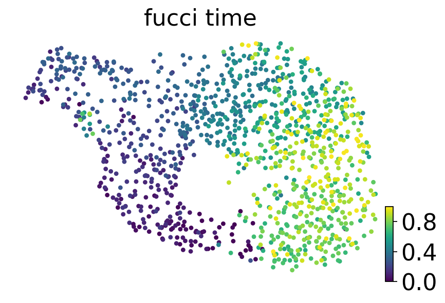
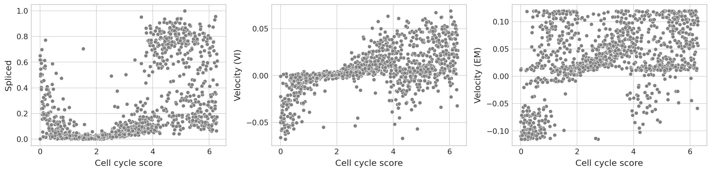
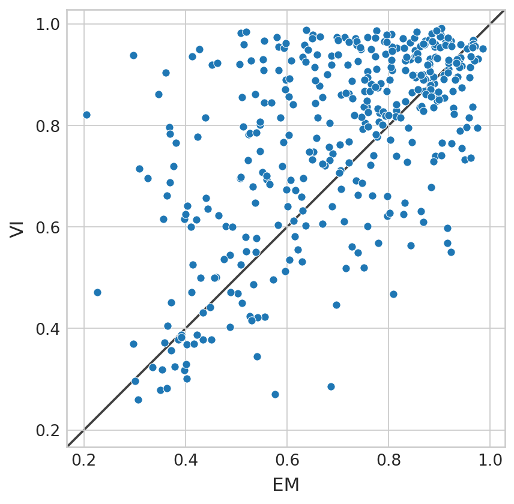
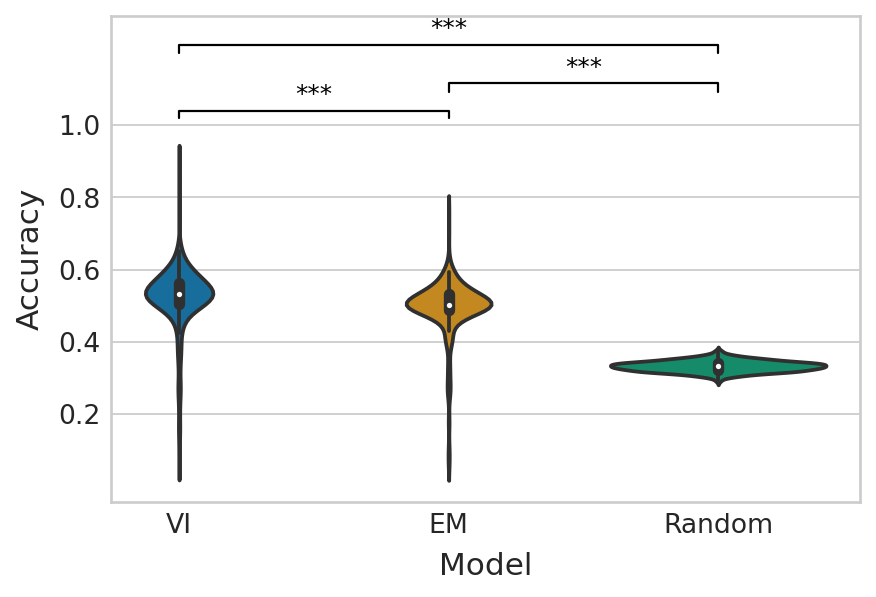

Comparison of velocities between EM and VI model#
Library imports#
import os
import sys
from tqdm import tqdm
import numpy as np
import pandas as pd
import torch
from scipy.stats import pearsonr, spearmanr, ttest_ind
from sklearn.metrics import accuracy_score
from velovi import preprocess_data, VELOVI
import matplotlib.pyplot as plt
import mplscience
import seaborn as sns
from matplotlib.colors import to_hex
import scanpy as sc
import scvelo as scv
import scvi
from scvelo.plotting.simulation import compute_dynamics
from _calculation import get_gams
sys.path.append("../..")
from paths import DATA_DIR, FIG_DIR, PROJECT_DIR
Global seed set to 0
General settings#
scvi.settings.dl_pin_memory_gpu_training = False
sns.reset_defaults()
sns.reset_orig()
scv.settings.set_figure_params('scvelo', dpi_save=400, dpi=80, transparent=True, fontsize=20, color_map='viridis')
SAVE_FIGURES = True
if SAVE_FIGURES:
os.makedirs(FIG_DIR / 'comparison', exist_ok=True)
Function definitions#
def fit_scvelo(adata):
scv.tl.recover_dynamics(
adata, fit_scaling=False, var_names=adata.var_names, n_jobs=8
)
adata.var["fit_scaling"] = 1.0
scv.tl.velocity(adata, mode="dynamical", min_likelihood=-np.inf, min_r2=None)
def fit_velovi(bdata):
VELOVI.setup_anndata(bdata, spliced_layer="Ms", unspliced_layer="Mu")
vae = VELOVI(bdata)
vae.train()
df = vae.history["elbo_train"].iloc[20:].reset_index().rename(columns={'elbo_train': 'elbo'})
df['set'] = 'train'
_df = vae.history["elbo_validation"].iloc[20:].reset_index().rename(columns={'elbo_validation': 'elbo'})
_df['set'] = 'validation'
df = pd.concat([df, _df], axis=0).reset_index(drop=True)
with mplscience.style_context():
sns.set_style(style="whitegrid")
fig, ax = plt.subplots(figsize=(6, 4))
sns.lineplot(data=df, x='epoch', y='elbo', hue='set', palette=['#0173B2', '#DE8F05'], ax=ax)
latent_time = vae.get_latent_time(n_samples=25)
velocities = vae.get_velocity(n_samples=25, velo_statistic="mean")
t = latent_time
scaling = 20 / t.max(0)
bdata.layers["velocities_velovi"] = velocities / scaling
bdata.layers["latent_time_velovi"] = latent_time
bdata.var["fit_alpha"] = vae.get_rates()["alpha"] / scaling
bdata.var["fit_beta"] = vae.get_rates()["beta"] / scaling
bdata.var["fit_gamma"] = vae.get_rates()["gamma"] / scaling
bdata.var["fit_t_"] = (
torch.nn.functional.softplus(vae.module.switch_time_unconstr)
.detach()
.cpu()
.numpy()
) * scaling
bdata.layers["fit_t"] = latent_time.values * scaling[np.newaxis, :]
bdata.var['fit_scaling'] = 1.0
return vae
def compute_confidence(adata, vkey="velocity"):
velo = adata.layers[vkey]
scv.tl.velocity_graph(adata, vkey=vkey, n_jobs=8)
scv.tl.velocity_confidence(adata, vkey=vkey)
g_df = pd.DataFrame()
g_df["Velocity confidence"] = adata.obs[f"{vkey}_confidence"].to_numpy().ravel()
return g_df
def add_significance(ax, left: int, right: int, significance: str, level: int = 0, **kwargs):
bracket_level = kwargs.pop("bracket_level", 1)
bracket_height = kwargs.pop("bracket_height", 0.02)
text_height = kwargs.pop("text_height", 0.01)
bottom, top = ax.get_ylim()
y_axis_range = top - bottom
bracket_level = (y_axis_range * 0.07 * level) + top * bracket_level
bracket_height = bracket_level - (y_axis_range * bracket_height)
ax.plot(
[left, left, right, right],
[bracket_height, bracket_level, bracket_level, bracket_height], **kwargs
)
ax.text(
(left + right) * 0.5,
bracket_level + (y_axis_range * text_height),
significance,
ha='center',
va='bottom',
c='k'
)
def get_classification_scores(velo_sign_true, velo_sign_pred, score_fun, **kwargs):
n_vars = velo_sign_true.shape[1]
em_score = [
score_fun(velo_sign_true[:, var_id], velo_sign_pred["EM"][:, var_id], **kwargs)
for var_id in range(n_vars)
]
vi_score = [
score_fun(velo_sign_true[:, var_id], velo_sign_pred["VI"][:, var_id], **kwargs)
for var_id in range(n_vars)
]
return em_score, vi_score
def get_significance(pvalue):
if pvalue < 0.001:
return "***"
elif pvalue < 0.01:
return "**"
elif pvalue < 0.1:
return "*"
else:
return "n.s."
def plot_classification_score(em_score, vi_score, baseline_performance, score_name, **kwargs):
n_vars = len(em_score)
df = pd.DataFrame(
{
score_name: vi_score + em_score + baseline_performance,
"Model": ["VI"] * n_vars + ["EM"] * n_vars + ["Random"] * n_vars
}
)
with mplscience.style_context():
sns.set_style(style="whitegrid")
fig, ax = plt.subplots(figsize=(6, 4))
sns.boxplot(data=df, x="Model", y=score_name, palette="colorblind", ax=ax)
Data loading#
adata = sc.read(DATA_DIR / "fucci" / "adata.h5ad")
adata.X = adata.layers["spliced"].copy()
del adata.layers["ambiguous"]
del adata.layers["matrix"]
del adata.layers["spanning"]
adata.obs.drop(
["Well_Plate", "plate", "MeanGreen530", "MeanRed585", "initial_size_unspliced", "initial_size_spliced", "initial_size"],
axis=1,
inplace=True
)
adata.var_names = adata.var["name"].values
adata.var.drop(adata.var.columns, axis=1, inplace=True)
adata.obs["pseudo_clusters"] = pd.cut(adata.obs["fucci_time"], bins=5, labels=False).astype(str).astype("category")
adata.obs["pseudo_clusters_equal_size"] = pd.qcut(adata.obs["fucci_time"], q=5, labels=False)
adata.obs["pseudo_clusters_equal_size_num"] = adata.obs["pseudo_clusters_equal_size"].astype(float)
adata.obs["cell_cycle_rad"] = adata.obs["fucci_time"] / adata.obs["fucci_time"].max() * 2 * np.pi
adata
AnnData object with n_obs × n_vars = 1146 × 19997
obs: 'phase', 'fucci_time', 'pseudo_clusters', 'pseudo_clusters_equal_size', 'pseudo_clusters_equal_size_num', 'cell_cycle_rad'
layers: 'spliced', 'unspliced'
Data preprocessing#
scv.pp.filter_and_normalize(adata, min_counts=10, n_top_genes=2000)
Filtered out 4748 genes that are detected 10 counts (spliced).
Normalized count data: X, spliced, unspliced.
Extracted 2000 highly variable genes.
Logarithmized X.
sc.tl.pca(adata, svd_solver='arpack')
sc.pp.neighbors(adata, n_neighbors=30, n_pcs=30)
scv.pp.moments(adata, n_pcs=None, n_neighbors=None)
computing moments based on connectivities
finished (0:00:00) --> added
'Ms' and 'Mu', moments of un/spliced abundances (adata.layers)
sc.tl.umap(adata)
scv.pl.scatter(adata, basis='umap', color='fucci_time', cmap='viridis')

adata = preprocess_data(adata)
bdata = adata.copy()
computing velocities
finished (0:00:00) --> added
'velocity', velocity vectors for each individual cell (adata.layers)
Model fitting#
EM model#
fit_scvelo(adata)
recovering dynamics (using 8/14 cores)
Global seed set to 0
Global seed set to 0
Global seed set to 0
Global seed set to 0
Global seed set to 0
Global seed set to 0
Global seed set to 0
Global seed set to 0
finished (0:00:10) --> added
'fit_pars', fitted parameters for splicing dynamics (adata.var)
computing velocities
finished (0:00:00) --> added
'velocity', velocity vectors for each individual cell (adata.layers)
veloVI#
velovi_vae = fit_velovi(bdata)
GPU available: True (cuda), used: True
TPU available: False, using: 0 TPU cores
IPU available: False, using: 0 IPUs
HPU available: False, using: 0 HPUs
LOCAL_RANK: 0 - CUDA_VISIBLE_DEVICES: [0]
Epoch 465/500: 93%|█████████▎| 465/500 [01:36<00:07, 4.80it/s, loss=-566, v_num=1]
Monitored metric elbo_validation did not improve in the last 45 records. Best score: -589.328. Signaling Trainer to stop.
Empricial velocity#
cell_cycle_pos = np.sort(adata.obs["cell_cycle_rad"].unique())[:-1]
aggr_counts = []
for pos in tqdm(cell_cycle_pos):
if pos == 0:
mask = ((adata.obs["cell_cycle_rad"] == 0) | (adata.obs["cell_cycle_rad"] == 2 * np.pi)).values
else:
mask = (adata.obs["cell_cycle_rad"] == pos).values
aggr_counts.append(np.median(adata.layers["Ms"][mask, :], axis=0))
aggr_counts = np.vstack(aggr_counts)
100%|██████████| 996/996 [00:00<00:00, 5025.74it/s]
reorder_mask = np.arange(1, adata.obs["cell_cycle_rad"].nunique() - 1).tolist() + [0]
cc_pos_diff = cell_cycle_pos.copy()
cc_pos_diff = (cc_pos_diff[reorder_mask] - cc_pos_diff) % (2 * np.pi)
empirical_velo = (aggr_counts[reorder_mask, :] - aggr_counts) / cc_pos_diff.reshape(-1, 1)
empirical_velo_sign = np.sign(empirical_velo)
Velocity processing#
aggr_velo = {"EM": [], "VI": []}
for pos in tqdm(cell_cycle_pos):
if pos == 0:
mask = ((adata.obs["cell_cycle_rad"] == 0) | (adata.obs["cell_cycle_rad"] == 2 * np.pi)).values
else:
mask = (adata.obs["cell_cycle_rad"] == pos).values
aggr_velo["EM"].append(np.median(adata.layers["velocity"][mask, :], axis=0))
aggr_velo["VI"].append(np.median(bdata.layers["velocities_velovi"][mask, :], axis=0))
aggr_velo["EM"] = np.vstack(aggr_velo["EM"])
aggr_velo["VI"] = np.vstack(aggr_velo["VI"])
100%|██████████| 996/996 [00:00<00:00, 4060.77it/s]
aggr_velo_sign = {}
aggr_velo_sign["EM"] = np.sign(aggr_velo["EM"])
aggr_velo_sign["VI"] = np.sign(aggr_velo["VI"])
Velocity consistency#
dfs = []
g_df = compute_confidence(adata)
g_df["Dataset"] = "Cell cycle"
g_df["Method"] = "EM model"
dfs.append(g_df)
g_df = compute_confidence(bdata, vkey="velocities_velovi")
g_df["Dataset"] = "Cell cycle"
g_df["Method"] = "veloVI"
dfs.append(g_df)
conf_df = pd.concat(dfs, axis=0)
computing velocity graph (using 8/14 cores)
finished (0:00:01) --> added
'velocity_graph', sparse matrix with cosine correlations (adata.uns)
--> added 'velocity_length' (adata.obs)
--> added 'velocity_confidence' (adata.obs)
--> added 'velocity_confidence_transition' (adata.obs)
computing velocity graph (using 8/14 cores)
finished (0:00:01) --> added
'velocities_velovi_graph', sparse matrix with cosine correlations (adata.uns)
--> added 'velocities_velovi_length' (adata.obs)
--> added 'velocities_velovi_confidence' (adata.obs)
--> added 'velocities_velovi_confidence_transition' (adata.obs)
with mplscience.style_context():
sns.set_style(style="whitegrid")
fig, ax = plt.subplots(figsize=(3, 6))
sns.violinplot(
data=conf_df,
ax=ax,
orient="h",
y="Dataset",
x="Velocity confidence",
hue="Method",
hue_order=["veloVI", "EM model"],
palette=sns.color_palette(['#0173B2', '#DE8F05']),
);
ax.set_xticks([0.25, 0.5, 0.75, 1.0])
ax.set_xticklabels([0.25, 0.5, 0.75, 1.0]);
if SAVE_FIGURES:
fig.savefig(
FIG_DIR / 'comparison' / 'fucci_velocity_confidence.svg',
format="svg",
transparent=True,
bbox_inches='tight'
)
/vol/storage/miniconda3/envs/velovi-py39/lib/python3.9/site-packages/seaborn/categorical.py:381: DeprecationWarning: distutils Version classes are deprecated. Use packaging.version instead.
if LooseVersion(mpl.__version__) < "3.0":
/vol/storage/miniconda3/envs/velovi-py39/lib/python3.9/site-packages/setuptools/_distutils/version.py:346: DeprecationWarning: distutils Version classes are deprecated. Use packaging.version instead.
other = LooseVersion(other)
GAM fitting#
gams = {}
gams["EM"] = get_gams(adata=adata, layer="velocity", time="cell_cycle_rad", n_jobs=8)
gams["VI"] = get_gams(adata=bdata, layer="velocities_velovi", time="cell_cycle_rad", n_jobs=8)
100%|██████████| 395/395 [00:01<00:00, 339.84it/s]
100%|██████████| 395/395 [00:01<00:00, 359.66it/s]
var_id = 186
df = pd.DataFrame(
{
"Velocity (EM)": adata.layers["velocity"][:, var_id],
"Velocity (VI)": bdata.layers["velocities_velovi"][:, var_id],
"Cell cycle score": adata.obs["cell_cycle_rad"].values,
"Unspliced": adata.layers["Mu"][:, var_id],
"Spliced": adata.layers["Ms"][:, var_id],
}
)
with mplscience.style_context():
sns.set_style(style="whitegrid")
fig, ax = plt.subplots(figsize=(16, 4), ncols=3)
sns.scatterplot(data=df, x="Cell cycle score", y="Spliced", color="grey", ax=ax[0])
sns.scatterplot(data=df, x="Cell cycle score", y="Velocity (VI)", color="grey", ax=ax[1])
sns.scatterplot(data=df, x="Cell cycle score", y="Velocity (EM)", color="grey", ax=ax[2])
plt.tight_layout()
if SAVE_FIGURES:
fig.savefig(
FIG_DIR / 'comparison' / 'fucci_velo_vs_time.svg',
format="svg",
transparent=True,
bbox_inches='tight'
)

cell_cycle_score = adata.obs["cell_cycle_rad"].values
cell_cycle_score = np.vstack([cell_cycle_score - 2 * np.pi, cell_cycle_score, cell_cycle_score + 2 * np.pi]).T
adata.var["gam_r2_scores"] = [
gam._estimate_r2(X=cell_cycle_score, y=adata.layers["velocity"][:, var_id])["McFadden"]
for var_id, gam in enumerate(gams["EM"].values())
]
bdata.var["gam_r2_scores"] = [
gam._estimate_r2(X=cell_cycle_score, y=bdata.layers["velocities_velovi"][:, var_id])["McFadden"]
for var_id, gam in enumerate(gams["VI"].values())
]
/vol/storage/miniconda3/envs/velovi-py39/lib/python3.9/site-packages/pygam/utils.py:649: DeprecationWarning: `np.int` is a deprecated alias for the builtin `int`. To silence this warning, use `int` by itself. Doing this will not modify any behavior and is safe. When replacing `np.int`, you may wish to use e.g. `np.int64` or `np.int32` to specify the precision. If you wish to review your current use, check the release note link for additional information.
Deprecated in NumPy 1.20; for more details and guidance: https://numpy.org/devdocs/release/1.20.0-notes.html#deprecations
bases = (x >= aug_knots[:-1]).astype(np.int) * \
/vol/storage/miniconda3/envs/velovi-py39/lib/python3.9/site-packages/pygam/utils.py:650: DeprecationWarning: `np.int` is a deprecated alias for the builtin `int`. To silence this warning, use `int` by itself. Doing this will not modify any behavior and is safe. When replacing `np.int`, you may wish to use e.g. `np.int64` or `np.int32` to specify the precision. If you wish to review your current use, check the release note link for additional information.
Deprecated in NumPy 1.20; for more details and guidance: https://numpy.org/devdocs/release/1.20.0-notes.html#deprecations
(x < aug_knots[1:]).astype(np.int)
df = pd.DataFrame(
{
"EM": adata.var["gam_r2_scores"].values,
"VI": bdata.var["gam_r2_scores"].values,
}
)
with mplscience.style_context():
sns.set_style(style="whitegrid")
fig, ax = plt.subplots(figsize=(6, 6))
sns.scatterplot(data=df, x="EM", y="VI", ax=ax)
lims = [
np.min([ax.get_xlim(), ax.get_ylim()]), # min of both axes
np.max([ax.get_xlim(), ax.get_ylim()]), # max of both axes
]
# now plot both limits against eachother
ax.plot(lims, lims, 'k-', alpha=0.75, zorder=0)
ax.set_aspect('equal')
ax.set_xlim(lims)
ax.set_ylim(lims);
if SAVE_FIGURES:
fig.savefig(
FIG_DIR / 'comparison' / 'fucci_r2.svg',
format="svg",
transparent=True,
bbox_inches='tight'
)

(bdata.var["gam_r2_scores"].values > adata.var["gam_r2_scores"].values).mean()
0.6531645569620254
Estimated velocity vs. empirical velocity#
np.random.seed(0)
random_velo_sign = np.random.choice([-1, 0, 1], size=(len(empirical_velo_sign), adata.n_vars))
baseline_performance = [
accuracy_score(empirical_velo_sign[:, var_id], random_velo_sign[:, var_id])
for var_id in range(adata.n_vars)
]
em_score, vi_score = get_classification_scores(
velo_sign_true=empirical_velo_sign,
velo_sign_pred=aggr_velo_sign,
score_fun=accuracy_score,
)
df = pd.DataFrame(
{
"Accuracy": vi_score + em_score + baseline_performance,
"Model": ["VI"] * adata.n_vars + ["EM"] * adata.n_vars + ["Random"] * adata.n_vars
}
)
with mplscience.style_context():
sns.set_style(style="whitegrid")
fig, ax = plt.subplots(figsize=(6, 4))
sns.violinplot(data=df, x="Model", y="Accuracy", palette="colorblind", ax=ax)
ttest_res = ttest_ind(vi_score, em_score, equal_var=False, alternative="greater")
significance = get_significance(ttest_res.pvalue)
add_significance(
ax=ax, left=0, right=1, significance=significance, lw=1, bracket_level=1.05, c="k", level=0,
)
ttest_res = ttest_ind(em_score, baseline_performance, equal_var=False, alternative="greater")
significance = get_significance(ttest_res.pvalue)
add_significance(
ax=ax, left=1, right=2, significance=significance, lw=1, c="k", level=1, bracket_level=0.95
)
ttest_res = ttest_ind(em_score, baseline_performance, equal_var=False, alternative="greater")
significance = get_significance(ttest_res.pvalue)
add_significance(
ax=ax, left=0, right=2, significance=significance, lw=1, c="k", level=2, bracket_level=0.9
)
y_min, y_max = ax.get_ylim()
ax.set_ylim([y_min, y_max + 0.02])
ax.set_yticks([0.2, 0.4, 0.6, 0.8, 1.0])
ax.set_yticklabels([0.2, 0.4, 0.6, 0.8, 1.0]);
if SAVE_FIGURES:
fig.savefig(
FIG_DIR / 'comparison' / 'fucci_velocity_sign_accuracy.svg',
format="svg",
transparent=True,
bbox_inches='tight'
)
